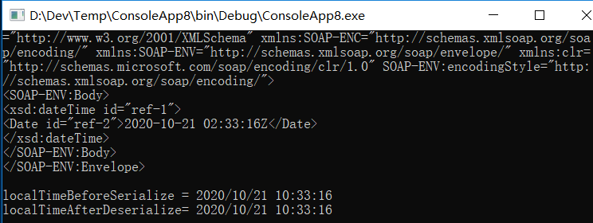

序列化
作者：追风剑情 发布于：2017-9-18 21:47 分类：C#
示例一：二进制序列化
using System;
using System.IO;
using System.Collections.Generic;
using System.Runtime.Serialization;
using System.Runtime.Serialization.Formatters.Binary;
namespace SerializableTest
{
class Program
{
static void Main(string[] args)
{
Person student = new Person { Num = 23, Name = "Jiki", Age = 16, Sex = "boy"};
Console.WriteLine("序列化到文件中...");
IFormatter formatter = new BinaryFormatter();
Stream stream = new FileStream("e:/student.txt", FileMode.OpenOrCreate,
FileAccess.Write, FileShare.None);
formatter.Serialize(stream, student);
stream.Close();
Console.WriteLine("序列化完成!");
//注意：反序列化还原对象时，并不会调用Person类的构造函数
Stream destream = new FileStream("e:/student.txt", FileMode.Open,
FileAccess.Read, FileShare.Read);
Person de_student = (Person)formatter.Deserialize(destream);
stream.Close();
Console.WriteLine("反序列化结束，输出对象信息...");
Console.WriteLine(de_student.ToString());
Console.WriteLine("------------------------------------------------------");
Console.WriteLine("序列化到内存流中...");
MemoryStream ms = new MemoryStream();
formatter.Serialize(ms, student);
ms.Flush();
byte[] buffer = ms.ToArray();
ms.Close();
Console.WriteLine("序列化完成!");
MemoryStream dms = new MemoryStream();
dms.Write(buffer, 0, buffer.Length);
dms.Flush();
dms.Position = 0;
Person m_student = (Person)formatter.Deserialize(dms);
dms.Close();
Console.WriteLine("反序列化结束，输出对象信息...");
Console.WriteLine(m_student.ToString());
Console.ReadKey();
}
}
[Serializable]
public class Person
{
public int Num { get; set; }
public string Name { get; set; }
public string Sex { get; set; }
public int Age { get; set; }
//私有字段也可被序列化
//[NonSerialized] 加了这个标签就不会被序列化了
private string Other = "other is private field";
public override string ToString()
{
string s = string.Format("学号: {0}, 名字: {1}, 性别: {2}, 年龄: {3}, 其它: {4}", Num, Name, Sex, Age, Other);
return s;
}
}
}
运行测试
版本控制
如果序列化类型的实例，在类型中添加新字段，然后试图反序列化不包含新字段的对象，格式化器会抛出SerializationException异常，并显示一条消息告诉你流中要反序列化的数据包含错误的成员数目。这非常不利于版本控制，因为我们经常都要在类型的新版本中添加新字段。幸好，这时可以利用System.Runtime.Serialization.OptionalFieldAttribute特性。类型中新增的每个字段都要应用OptionalFieldAttribute特性。然后，当格式化器看到该特性应用于一个字段时，就不会因为流中的数据不包含这个字段而抛出SerializationException。
注意：内层对象先于外层对象完成反序列化
更多控制特性
using System;
using System.Runtime.Serialization;
[Serializable]
public class MyType
{
//所有public, private, protected都可被序列化
Int32 x, y;
//该特性只能应用于字段，而且会被派生类继承
[NonSerialized] //不序列化此字段
Int32 sum;
public MyType(Int32 x, Int32 y)
{
this.x = x;
this.y = y;
sum = x + y;
}
[OnDeserializing] //此方法在反序列化前被调用
private void OnDeserializing(StreamingContext context)
{
//在这个方法中，为字段设置默认值
}
[OnDeserialized] //此方法在反序列化后被调用
private void OnDeserialized(StreamingContext context)
{
//根据字段值初始化瞬时状态
sum = x + y;
}
[OnSerializing] //此方法在序列化前被调用
private void OnSerializing(StreamingContext context)
{
//在序列化前修改任何需要修改的状态
}
[OnSerialized] //此方法在序列化后被调用
private void OnSerialized(StreamingContext context)
{
//在序列化后恢复任何需要恢复的状态
}
}
序列化对象时，类型的全名和类型定义程序集的全名会被写入流。BinaryFormatter默认输出程序集的完整标识，其中包括程序集的文件名（无扩展名）、版本号、语言文化以及公钥信息。反序列化对象时，格式化器首先获取程序集标识信息，并通过调用System.Reflection.Assembly的Load方法，确保程序集已加载到正在执行的AppDomain中。程序集加载好之后，格式化器在程序集中查找与要反序列化的对象匹配的类型。找不到匹配类型就抛出异常，不再对更多的对象进行反序列化。找到匹配的类型，就创建类型的实例，并用流中包含的值对其字段进行初始化。如果类型中的字段与流中读取的字段名不完全匹配，就抛出SerializationException异常，不再对更多的对象进行反序列化。
控制序列化/反序列化的数据
控制序列化和反序列化的过程的最佳方式就是使用OnSerializing，OnSerialized，OnDeserializing，OnDeserialized，NonSerialized和OptionalField等特性。然而，在一些极少见的情况下，这些特性不能提供你想要的全部控制。此外，格式化器内部使用的是反射，而反射的速度比较慢的，这会增大序列化和反序列化对象所花的时间。为了对序列化/反序列化的数据进行完全的控制，并避免使用反射，你的类型可实现System.Runntime.Serialization.ISerializable接口，它的定义如下：
public interface ISerializable {
void GetObjectData(SerializationInfo info, StreamingContext context);
}
这个接口只有一个方法，即GetObjectData。但实现这个接口的大多数类型还实现了一个特殊的构造器。
[SecurityPermissionAttribute(SecurityAction.Demand, SerializationFormatter = true)]
格式化器序列化对象图时会检查每个对象。如果发现一个对象的类型实现了ISerializable接口，就会忽略所有定制特性，改为构造新的System.Runtime.Serialization.SerializationInfo对象。该对象包含了要为对象序列化的值的集合。
构造SerializationInfo对象时，格式化器要传递两个参数：Type和System.Runtime.Serialization.IFormatterConverter。Type参数标识要序列化的对象。唯一性地标识一个类型需要两个部分的信息：类型的字符串名称及其程序集标识(包括程序集名、版本、语言文化和公钥)。构造好的SerializationInfo对象包含类型的全名(通过在内部查询Type的FullName属性)，这个字符串会存储到一个私有字段中。如果你想获取类型的全名，可查询SerializationInfo的FullTypeName属性。类似地，构造器获取类型的定义程序集(通过在内部查询Type的Module属性，再查询Module的Assembly属性，再查询Assembly的FullName属性)，这个字符串会存储在一个私有字段中。如果你想获取程序集的标识，可查询SerializationInfo的AssemblyName属性。
构造好并初始化好SerializationInfo对象后，格式化器调用类型的GetObjectData方法，向它传递对SerializationInfo对象的引用。GetObjectData方法决定需要哪些信息来序列化对象，并将这些信息添加到SerializationInfo对象中。GetObjectData调用SerializationInfo类型提供的AddValue方法的众多重载版本之一来指定要序列化的信息。针对要添加的每个数据，都要调用一次AddValue。
示例：实现ISerializable和IDeserializationCallback接口来控制序列化和反序列化
using System;
using System.Collections.Generic;
using System.Security.Permissions;
using System.Runtime.Serialization;
using System.Security;
[Serializable]
public class Dictionary<TKey, TValue> : ISerializable, IDeserializationCallback
{
//私有字段放这里
private Int32 m_version = 1;
private SerializationInfo m_siInfo;//只用于反序列化
//用于控制反序列化的特殊构造器(这是ISerializable需要的),如果是密封类，建议声明为private
[SecurityPermissionAttribute(SecurityAction.Demand, SerializationFormatter = true)]
protected Dictionary(SerializationInfo info, StreamingContext context)
{
//反序列化期间，为OnDeserialization保存SerializationInfo
m_siInfo = info;
}
//控制序列化
[SecurityCritical]
public virtual void GetObjectData(SerializationInfo info, StreamingContext context)
{
//这里用AddValue方法添加要序列化的内容
info.AddValue("Version", m_version);
}
//所有key/value对象都反序列化好之后调用的方法
void IDeserializationCallback.OnDeserialization(object sender)
{
if (m_siInfo == null) return;
//这里用GetXX方法获取流中的值
//如果值在流中的类型和你试图获取(Get)的类型不符，格式化器会尝试用一个IFormatterConverter对象将流中的值转型成你指定的类型。
Int32 num = m_siInfo.GetInt32("Version");
//遍历
//foreach(SerializationEntry entry in m_siInfo) { }
m_version = num;
m_siInfo = null;
}
}
每个AddValue方法都获取一个String名称和一些数据。数据一般是简单的值类型，比如Boolean，Char，Byte，SByte，Int16，UInt16，Int32，UInt32，Int64，UInt64，Single，Double，Decimal或者DateTime。然而，还可以在调用AddValue时向它传递对一个Object(比如一个String)的引用。GetObjectData添加好所有必要的序列化信息之后，会返回至格式化器。
要实现ISerializable但基类型没有实现怎么办？
ISerializable接口的功能非常强大，允许类型完全控制如何对类型的实例进行序列化和反序列化。但这个能力是有代价的：现在，该类型还要负责它的基类型的所有字段的序列化。如果基类型也实现了ISerializable接口，那么对基类型的字段进行序列化是很容易的。调用基类型的GetObjectData方法即可。
如果基类没有实现ISerializable接口。在这种情况下，派生类必须手动序列化基类的字段，具体的做法是获取它们的值，并把这些值添加到SerializationInfo集合中。然后，在你的特殊构造器中，还必须从集合中取出值，并以某种方式设置基类的字段。如果基类的字段是public或protected的，那么一切都很容易实现。如果是private字段，就很难或者根本不可能实现。
以下代码演示了如何正确实现ISerializable的GetObjectData方法和它的隐含的构造器，使基类的字段能被序列化：
[Serializable]
internal class Base
{
protected String m_name = "Jeff";
public Base() { }
}
[Serializable]
internal class Derived : Base, ISerializable
{
private DateTime m_date = DateTime.Now;
public Derived() { }
// 如果这个构造器不存在，便会引发一个SerializationException异常、
// 如果这个类不是密封类，这个构造器就应该是protected的
[SecurityPermissionAttribute(SecurityAction.Demand, SerializationFormatter = true)]
protected Derived(SerializationInfo info, StreamingContext context)
{
//为我们的类和基类获取可序列化的成员集合
Type baseType = this.GetType().BaseType;
MemberInfo[] mi = FormatterServices.GetSerializableMembers(baseType, context);
//从info对象反序列化基类的字段
for (Int32 i = 0; i<mi.Length; i++)
{
//获取字段，并把它设为反序列化好的值
FieldInfo fi = (FieldInfo)mi[i];
fi.SetValue(this, info.GetValue(baseType.FullName + "+" + fi.Name, fi.FieldType));
}
//反序列化为这个类序列化的值
m_date = info.GetDateTime("Date");
}
[SecurityPermissionAttribute(SecurityAction.Demand, SerializationFormatter = true)]
public virtual void GetObjectData(SerializationInfo info, StreamingContext context)
{
//为这个类序列化希望的值
info.AddValue("Date", m_date);
//获取我们的类和基类的可序列化的成员
Type baseType = this.GetType().BaseType;
MemberInfo[] mi = FormatterServices.GetSerializableMembers(baseType, context);
//将基类的字段序列化到info对象中
for (Int32 i=0; i<mi.Length; i++)
{
//为字段名附加基类型全名作为前缀
info.AddValue(baseType.FullName + "+" + mi[i].Name,
((FieldInfo)mi[i]).GetValue(this));
}
}
public override string ToString()
{
return String.Format("Name={0}, Date={1}", m_name, m_date);
}
}
格式化器如何序列化类型实例
为了简化格式化器的操作，FCL(Framework Class Library,即Framework类库)在System.Runtime.Serialization命名空间提供了一个FormatterServices类型。该类型只包含静态方法，而且类型不能实例化。
以下步骤描述了格式化器如何自动序列化类型应用了SerializableAttribute特性的对象：
1. 格式化器调用FormatterServices的GetSerializableMembers方法:
public static MemberInfo[] GetSerializableMembers(Type type, StreamingContext context);
这个方法利用反射获取类型的public和private实例字段(标记了NonSerializedAttribute特性的字段除外)。方法返回由MemberInfo对象构成的数组，其中每个元素都对应一个可序列化的实例字段。
2. 对象被序列化，System.Reflection.MemberInfo对象数组传给FormatterServices的静态方法GetObjectData:
public static Object[] GetObjectData(Object obj, MemberInfo[] members);
这个方法返回一个Object数组，其中每个元素都标识了被序列化的那个对象中的一个字段的值。这个Object数组和MemberInfo数组是并行(parallel)的；换言之，Object数组中的元素0是MemberInfo数组中的元素0所标识的那个成员的值。
3. 格式化器将程序集标识和类型的完整名称写入流中。
4. 格式化器然后遍历两个数组中的元素，将每个成员的名称和值写入流中。
以下步骤描述了格式化器如何自动反序列化类型应用了SerializableAttribute特性的对象：
1. 格式化器从流中读取程序集标识和完整类型名称。如果程序集当前没有加载到AppDomain中，就加载。如果程序集不能加载，就抛出一个SerializationException异常，对象不能反序列化。如果程序集已加载，格式化器将程序集标识信息和类型全名传给FormatterServices的静态方法GetTypeFormAssembly:
public static Type GetTypeFromAssembly(Assembly assem, string name);
这个方法返回一个System.Type对象，它代表要反序列化的那个对象的类型。
2. 格式化器调用FormatterServices的静态方法GetUninitializedObject:
public static Object GetUninitializedObject(Type type);
这个方法为一个新对象分配内存，但不为对象调用构造器。然而，对象的所有字节都被初始化为null或0。
3. 格式化器现在构造并初始化一个MemberInfo数组，具体做法和前面一样，都是调用FormatterServices的GetSerializableMembers方法。这个方法返回需要反序列化的一组字段。
4. 格式化器根据流中包含的数据创建并初始化一个Object数组。
5. 将新分配对象、MemberInfo数组以及并行Object数组(其中包含字段值)的引用传给FormatterServices的静态方法PopulateObjectMembers:
public static Object PopulateObjectMembers(Object obj, MemberInfo[] members, Object[] data);
这个方法遍历数组，将每个字段初始化成对应的值。到此为止，对象就算是被彻底反序列化了。
流上下文(StreamingContext)
一组序列化好的对象可以有许多目的地：同一个进程、同一台机器上的不同进程、不同机器上的不同进程等。在一些比较少见的情况下，一个对象可能想知道它要在什么地方序列化，从而以不同的方式生成它的状态。例如，如果对象中包装了Windows信号量(semaphore)对象，如果它知道要反序列化到同一个进程中，就可决定对它的内核句柄(kernel handle)进行序列化，这是因为内核句柄在一个进程中有效。但如果要反序列化到同一台计算机的不同进程中，就可决定对信号量的字符串名称进行序列化。最后，如果要反序列化到不同计算机上的进程，就可决定抛出异常，因为信号量只在一台机器内有效。
| StreamingContext的公共只读属性 | ||
| 成员名称 | 成员类型 | 说明 |
| State | StreamingContextStates | 一组位标志(bit flag)，指定要序列化/反序列化的对象的来源或目的地 |
| Context | Object | 一个对象引用，对象中包含用户希望的任何上下文信息 |
| StreamingContext的标志 | ||
| 标志名称 | 标志值 | 说明 |
| CrossProcess | 0x0001 | 来源或目的地是同一台机器的不同进程 |
| CrossMachines | 0x0002 | 来源或目的地在不同机器上 |
| File | 0x0004 | 来源或目的地是文件。不保证反序列化数据的是同一个进程 |
| Persistence | 0x0008 | 来源或目的地是存储(store)，比如数据库或文件。不保证反序列化数据的是同一个进程 |
| Remoting | 0x0010 | 来源或目的地是远程的未知位置。这个位置可能在(也可能不在)同一台机器上 |
| Other | 0x0020 | 来源或目的地未知 |
| Clone | 0x0040 | 对象图被克隆。序列化代码可认为是由同一进程对数据进行反序列化，所以可安全地访问句柄或其他非托管资源 |
| CrossAppDomain | 0x0080 | 来源或目的地是不同的AppDomain |
| All | 0x00FF | 来源或目的地可能是上述任何一个上下文。这是默认设定 |
IFormatter接口（同时由BinaryFormatter和SoapFormatter类型实现）定义了StreamingContext类型的可读/可写属性Context。构造格式化器时，格式化器会初始化它的Context属性，将StreamingContextStates设为All，将对额外状态对象的引用设置为null。
格式化器构造好之后，就可以使用任何StreamingContextStates位标志来构造一个StreamingContext结构，并可选择传递一个对象引用（对象中包含你需要的任何额外的上下文信息）。现在，在调用格式化器的Serialize或Deserialize方法之前，你只需要将格式化器的Context属性设为这个新的StreamingContext对象。
类型序列化为不同类型以及对象反序列化为不同对象
.NET Framework的序列化架构是相当全面的。
- 有的类型(比如System.DBNull和System.Relection.Missing)设计成每个AppDomain一个实例。经常将这些类型称为单实例(singleton)类型。给定一个DBNull对象引用，序列化和反序列化它不应造成在AppDomain中新建一个DBNull对象。反序列化后，返回的引用应指向AppDomain中现有的DBNull对象。
- 对于某些类型(例如System.Type和System.Reflection.Assembly,以及其他反射类型，例如MemberInfo)，每个类型、程序集或者成员等都只能有一个实例。例如，假定一个数组中的每个元素都引用一个MemberInfo对象，其中5个元素引用的都是一个MemberInfo对象。序列化和反序列化这个数组后，那5个元素引用的应该还是一个MemberInfo对象（而不是分别引用5个不同的对象）。除此之外，这些元素引用的MemberInfo对象还必须实际对应于AppDomain中的一个特定成员。轮询数据库连接对象或者其他任何类型的对象时，这个功能也是很好用的。
- 对于远程控制的对象，CLR序列化与服务器对象有关的信息。在客户端上反序列化时，会造成CLR创建一个代理对象。这个代理对象的类型有别于服务器对象类型，但这对于客户端代码来说是透明的（客户端不需要关心这个问题）。客户端直接在代理对象上调用实例方法。然后，代理代码内部会调用远程发送给服务器，由后者实际执行请求的操作。
示例：展示了如何正确地序列化和反序列化单实例类型
using System;
using System.IO;
using System.Security.Permissions;
using System.Runtime.Serialization;
using System.Runtime.Serialization.Formatters.Binary;
namespace ConsoleApp7
{
class Program
{
static void Main(string[] args)
{
//单例的序列化与反序列化测试，保证AppDomain中只有Singleton类型的一个实例
Singleton[] a1 = { Singleton.GetSingleton(), Singleton.GetSingleton() };
Console.WriteLine("Do both elements refer to the same object? "
+ (a1[0] == a1[1]));
using (var stream = new MemoryStream())
{
BinaryFormatter formatter = new BinaryFormatter();
// 先序列化再反序列化数组元素
// 格式化器自动检测出两个数组元素都引用一个对象，所以格式化器只序列化一个对象。
formatter.Serialize(stream, a1);
stream.Position = 0;
Singleton[] a2 = (Singleton[])formatter.Deserialize(stream);
// 证明它的工作和预期的一样
Console.WriteLine("Do both elements refer to the same object? "
+ (a2[0] == a2[1]));
Console.WriteLine("Do both elements refer to the same object? "
+ (a1[0] == a2[0]));
}
Console.ReadKey();
}
}
// 每个AppDomain应该只有这个类型的一个实例
[Serializable]
public sealed class Singleton : ISerializable
{
// 这是该类型的一个实例
private static readonly Singleton s_theOneObject = new Singleton();
// 这些是实例的字段
public String Name = "Jeff";
public DateTime Date = DateTime.Now;
// 私有构造器，允许这个类型构造单实例
private Singleton() { }
// 该方法返回对单实例的引用
public static Singleton GetSingleton() { return s_theOneObject; }
// 序列化一个Singleton时调用的方法
// 我建议在这里使用一个显式接口方法实现(EIMI)
// 显式接口实现: https://www.cnblogs.com/zhangyanhai/p/3364622.html
[SecurityPermissionAttribute(SecurityAction.Demand, SerializationFormatter = true)]
void ISerializable.GetObjectData(SerializationInfo info, StreamingContext context)
{
// 告诉格式化器将Singleton对象序列化成一个SingletonSerializationHelper对象。
info.SetType(typeof(SingletonSerializationHelper));
// 不需要添加其他值
// 由于AddValue()没有调用，所以没有额外的字段信息写入流。
}
[Serializable]
private sealed class SingletonSerializationHelper : IObjectReference
{
// 这个方法在对象（它没有字段）反序列化之后调用
public object GetRealObject(StreamingContext context)
{
// 返回在对象反序列化好之后你真正想引用的对象
return Singleton.GetSingleton();
}
}
// 注意：特殊构造器是不必要的，因为它永远不会调用
}
}
运行测试
序列化代理(ISerializationSurrogate)
示例：
using System;
using System.Collections.Generic;
using System.Linq;
using System.Text;
using System.Threading.Tasks;
using System.IO;
using System.Runtime.Serialization;
//添加引用: System.Runtime.Serialization.Formatters.Soap.dll
using System.Runtime.Serialization.Formatters.Soap;
namespace ConsoleApp8
{
class Program
{
static void Main(string[] args)
{
SerializationSurrogateDemo();
Console.Read();
}
// 演示序列化代理(ISerializationSurrogate)
private static void SerializationSurrogateDemo()
{
using (var stream = new MemoryStream())
{
// 1.构造所需的格式化器
IFormatter formatter = new SoapFormatter();
// 2.构造一个SurrogateSelector(代理选择器)对象
SurrogateSelector ss = new SurrogateSelector();
// 3.告诉代理选择器为DateTime对象使用我们的代理
// 注意：AddSurrogate可多次调用来登记多个代理
ss.AddSurrogate(typeof(DateTime), formatter.Context, new UniversalToLocalTimeSerializationSurrogate());
// 4.告诉格式化器使用代理选择器
formatter.SurrogateSelector = ss;
// 创建一个DateTime来代表机器上的本地时间，并序列化它
DateTime localTimeBeforeSerialize = DateTime.Now;
formatter.Serialize(stream, localTimeBeforeSerialize);
// stream将Universal时间作为一个字符器显示，证明能正常工作
stream.Position = 0;
Console.WriteLine(new StreamReader(stream).ReadToEnd());
// 反序列化Universal时间字符串，并且把它转换成本地DateTime
stream.Position = 0;
DateTime localTimeAfterDeserialize = (DateTime)formatter.Deserialize(stream);
// 证明它能正确工作
Console.WriteLine("localTimeBeforeSerialize = {0}", localTimeBeforeSerialize);
Console.WriteLine("localTimeAfterDeserialize= {0}", localTimeAfterDeserialize);
}
}
}
/// <summary>
/// DateTime(值类型)类型的代理
/// 代理能控制DateTime对象的序列化和反序列化方式
/// 之所以要重写(覆盖)类型的序列化行为，主要是出于两方面的考虑:
/// 1.允许开发人员序列化最初没有设计成要序列化的类型
/// 2.允许开发人员提供一种方式将类型的一个版本映射到类型的另一个版本
/// </summary>
internal sealed class UniversalToLocalTimeSerializationSurrogate : ISerializationSurrogate
{
public void GetObjectData(object obj, SerializationInfo info, StreamingContext context)
{
//将DateTime从本地时间转换成UTC
info.AddValue("Date", ((DateTime)obj).ToUniversalTime().ToString("u"));
}
public object SetObjectData(object obj, SerializationInfo info, StreamingContext context, ISurrogateSelector selector)
{
//可以使用传入的SerializationInfo中的值，并返回null
//可以创建一个新对象(甚至创建不同类型的对象),并返回这个新对象
//如果转进来的obj是值类型，只能重新创建一个新对象(值类型不可变)
//将DateTime从UTC转换成本地时间
return DateTime.ParseExact(info.GetString("Date"), "u", null).ToLocalTime();
}
}
}
运行测试

代理选择器(SurrogateSelector)
多个SurrogateSelector对象可链接到一起。例如，可以让一个SurrogateSelector对象维护一组序列化代理，这些序列化代理(surrogate)用于将类型序列化成代理(proxy)，以便通过网络传送，或者跨越不同的AppDomain传送。还可以让另一个SurrogateSelector对象维护一组序列化代理，这些序列化代理用于将版本1的类型转换成版本2的类型。
surrogate对象负责序列化，而proxy对象负责跨越AppDomain边界访问对象。
如果有多个希望格式化器使用的SurrogateSelector对象，必须把它们链接到一个链表中。SurrogateSelector类型实现了ISurrogateSelector接口，该接口定义了三个方法。这些方法全部跟链接有关。下面展示了ISurrogateSelector接口是如何定义的：
public interface ISurrogateSelector {
void ChainSelector(ISurrogateSelector selector);
ISurrogateSelector GetNextSelector();
ISerializationSurrogate GetSurrogate(Type type, StreamingContext context, out ISurrogateSelector selector);
}
ChainSelector方法紧接在当前操作的ISurrogateSelector对象(this对象)之后插入一个ISurrogateSelector对象。GetNextSelector方法返回对链表中的下一个ISurrogateSelector对象的引用；如果当前操作的对象是链尾，就返回null。GetSurrogate方法在this所代表的ISurrogateSelector对象中查找一对Type/StreamingContext。如果没有找到Type/StreamingContext对，就访问链中的下一个ISurrogateSelector对象，该对象负责对找到的类型进行序列化/反序列化。除此之外，GetSurrogate还会返回包含匹配项的ISurrogateSelector对象；一般都用不着这个对象，所以一般会将其忽略。如果链中所有ISurrogateSelector对象都不包含匹配的一对Type/StreamingContext，GetSurrogate将返回null。
反序列化对象时重写程序集/类型
序列化对象时，格式化器输出类型及其定义程序集的全名。反序列化对象时，格式化器根据这个信息确定要为对象构造并初始化什么类型。前面讨论了如何利用ISerializationSurrogate接口来接管特定类型的序列化和反序列化工作。实现了ISerializationSurrogate接口的类型与特定程序集中的特定类型关联。
但有时候，ISerializationSurrogate机制的灵活性显得有点不足。在下面列举的情形中，有必要将对象反序列化和序列化成不同的类型：
- 开发人员可能想把一个类型的实现从一个程序集移动到另一个程序集。例如，程序集版本号的变化造成新程序集有别于原始程序集。
- 服务器对象序列化到发送给客户端的流中。客户端处理流时，可以将对象反序列化成完全不同的类型，该类型的代码知道如何向服务器的对象发出远程方法调用。
- 开发人员创建了类型的新版本，想把已序列化的对象反序列化成类型的新版本。
利用System.Runtime.Serialization.SerializationBinder类，可以非常简单地将一个对象反序列化成不同类型。为此，要先定义自己的类型，让它从抽象类SerializationBinder派生。在下面的代码中，假定你的版本1.0.0.0的程序集定义了名为Ver1的类，并假定程序集的新版本定义了Ver1ToVer2SerializationBinder类，还定义了名为Ver2的类：
internal sealed class Ver1ToVer2SerializationBinder : SerializationBinder {
public override Type BindToType() {
//将任何Ver1对象从版本1.0.0.0反序列化成一个Ver2对象
//计算定义Ver1类型的程序集名称
AssemblyName assemVer1 = Assembly.GetExecutingAssembly().GetName();
assemVer1.Version = new Version(1, 0, 0, 0);
//如果从v1.0.0.0反序列化Ver1对象，就把它转变成一个Ver2对象
if (assemblyName == assemVer1.ToString() && typeName == "Ver1")
return typeof(Ver2);
//否则，就只返回请求的同一个类型
return Type.GetType(String.Format("{0}, {1}", typeName, assemblyName));
}
}
现在，在构造好格式化器之后，构造Ver1ToVer2SerializationBinder的实例，并设置格式化器的可读/可写属性Binder，让它引用绑定器(binder)对象。设置好Binder属性后，调用格式化器的Deserialize方法。在反序列化期间，格式化器发现已设置了一个绑定器。每个对象要反序列化时，格式化器都调用绑定器的BindToType方法，向它传递程序集名称以及格式化器想要反序列化的类型。然后，BindToType判断实际应该构建什么类型，并返回这个类型。
public virtual void BindToName(Type serializedType, out string assemblyName, out string typeName)
序列化期间，格式化器调用这个方法，传递它想要序列化的类型。然后，你可以通过两个out参数返回真正想要序列化的程序集和类型。如果两个out参数返回null和null（默认实现就是这样的），就不执行任何更改。
参考 http://kb.cnblogs.com/page/78824/
标签: C#
日历
最新文章
随机文章
热门文章
分类

存档
- 2022年2月(2)
- 2022年1月(8)
- 2021年12月(5)
- 2021年11月(3)
- 2021年10月(4)
- 2021年9月(9)
- 2021年8月(14)
- 2021年7月(8)
- 2021年6月(5)
- 2021年5月(2)
- 2021年4月(3)
- 2021年3月(7)
- 2021年2月(2)
- 2021年1月(8)
- 2020年12月(7)
- 2020年11月(2)
- 2020年10月(6)
- 2020年9月(9)
- 2020年8月(10)
- 2020年7月(9)
- 2020年6月(18)
- 2020年5月(4)
- 2020年4月(25)
- 2020年3月(38)
- 2020年1月(21)
- 2019年12月(13)
- 2019年11月(29)
- 2019年10月(44)
- 2019年9月(17)
- 2019年8月(18)
- 2019年7月(25)
- 2019年6月(25)
- 2019年5月(17)
- 2019年4月(10)
- 2019年3月(36)
- 2019年2月(35)
- 2019年1月(28)
- 2018年12月(30)
- 2018年11月(22)
- 2018年10月(4)
- 2018年9月(7)
- 2018年8月(13)
- 2018年7月(13)
- 2018年6月(6)
- 2018年5月(5)
- 2018年4月(13)
- 2018年3月(5)
- 2018年2月(3)
- 2018年1月(8)
- 2017年12月(35)
- 2017年11月(17)
- 2017年10月(16)
- 2017年9月(17)
- 2017年8月(20)
- 2017年7月(34)
- 2017年6月(17)
- 2017年5月(15)
- 2017年4月(32)
- 2017年3月(8)
- 2017年2月(2)
- 2017年1月(5)
- 2016年12月(14)
- 2016年11月(26)
- 2016年10月(12)
- 2016年9月(25)
- 2016年8月(32)
- 2016年7月(14)
- 2016年6月(21)
- 2016年5月(17)
- 2016年4月(13)
- 2016年3月(8)
- 2016年2月(8)
- 2016年1月(18)
- 2015年12月(13)
- 2015年11月(15)
- 2015年10月(12)
- 2015年9月(18)
- 2015年8月(21)
- 2015年7月(35)
- 2015年6月(13)
- 2015年5月(9)
- 2015年4月(4)
- 2015年3月(5)
- 2015年2月(4)
- 2015年1月(13)
- 2014年12月(7)
- 2014年11月(5)
- 2014年10月(4)
- 2014年9月(8)
- 2014年8月(16)
- 2014年7月(26)
- 2014年6月(22)
- 2014年5月(28)
- 2014年4月(15)
友情链接
- Unity官网
- Unity圣典
- Unity在线手册
- Unity中文手册(圣典)
- Unity官方中文论坛
- Unity游戏蛮牛用户文档
- Unity下载存档
- Unity引擎源码下载
- Unity服务
- Unity Ads
- wiki.unity3d
- Visual Studio Code官网
- SenseAR开发文档
- MSDN
- C# 参考
- C# 编程指南
- .NET Framework类库
- .NET 文档
- .NET 开发
- WPF官方文档
- uLua
- xLua
- SharpZipLib
- Protobuf-net
- Protobuf.js
- OpenSSL
- OPEN CASCADE
- JSON
- MessagePack
- C在线工具
- 9RIA天地会
- 游戏蛮牛
- GreenVPN
- 聚合数据
- 热云
- 融云
- 腾讯云
- 腾讯开放平台
- 腾讯游戏服务
- 腾讯游戏开发者平台
- 腾讯课堂
- 微信开放平台
- 腾讯实时音视频
- 腾讯即时通信IM
- 微信公众平台技术文档
- 白鹭引擎官网
- 白鹭引擎开放平台
- 白鹭引擎开发文档
- FairyGUI编辑器
- PureMVC-TypeScript
- 讯飞开放平台
- 亲加通讯云
- Cygwin
- Mono开发者联盟
- Scut游戏服务器引擎
- KBEngine游戏服务器引擎
- Photon游戏服务器引擎
- 码云
- SharpSvn
- 腾讯bugly
- 4399原创平台
- 开源中国
- Firebase
- Firebase-Admob-Unity
- google-services-unity
- Firebase SDK for Unity
- Google-Firebase-SDK
- AppsFlyer SDK
- android-repository
- CQASO
- Facebook开发者平台
- gradle下载
- GradleBuildTool下载
- Android Developers
- Google中国开发者
- AndroidDevTools
- Android社区
- Android开发工具
- Google Play Games Services
- Google商店
- Google APIs for Android
- 金钱豹VPN
- TouchSense SDK
- MakeHuman
- Online RSA Key Converter
- Windows UWP应用
- Visual Studio For Unity
- E时代IDC主机
- Open CASCADE Technology
- 慕课网
- 奇优广告联盟
- 阿里云服务器ECS
- 在线免费文字转语音系统
- AI Studio
- 网云穿
- 百度网盘开放平台
- 迅捷画图
- 菜鸟工具
- [CSDN] 程序员研修院
- 华为人脸识别
交流QQ群
-
Flash游戏设计: 86184192
Unity游戏设计: 171855449
游戏设计订阅号

捐赠 (用于支付服务器费用)
-
微信

支持宝

捐赠的朋友可与博主成为微信好友，点击下方【给我写信】给博主留言。